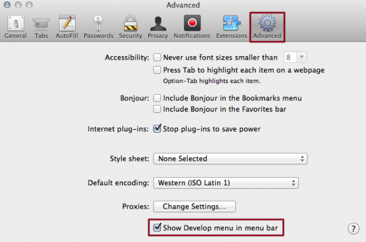
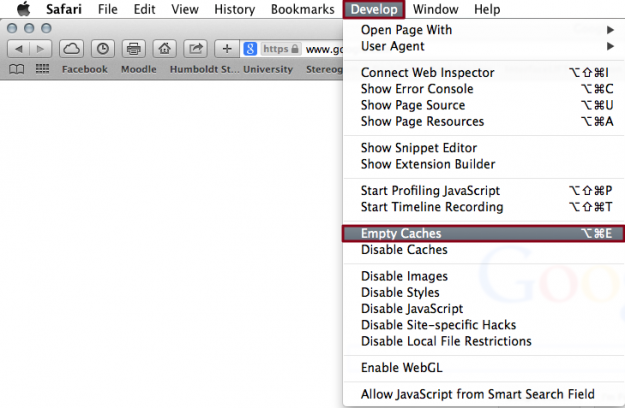

Step 1: Open settings — Launch Safari, click Safari in the upper-left corner of the main menu bar, and select the Preferences option near the top of the drop-down menu. Afterwards, click the Advanced tab located in the top navigation bar and check the box directly to the left of the Show Develop menu in menu bar option to add the menu to Safari by default.

Step 2: Clear the browser cache — Click the Develop menu near the middle of the main Safari menu bar and select the Empty Caches option.
